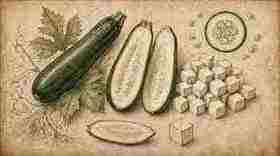
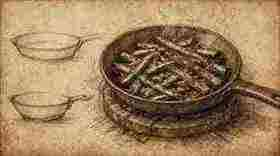
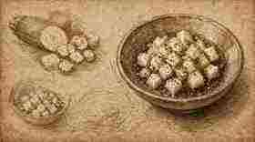
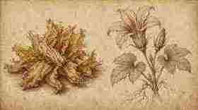
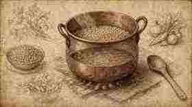
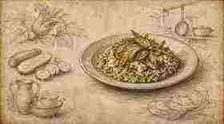

01
Separare il verde esterno e il cuore bianco delle zucchine.
Separate the outer green and the white heart of the courgettes.

Ratanà · Ricetta IV · Tutorial
Ratanà · Recipe IV · Tutorial
Carnaroli, zucchine rosolate, fiori e chiusura con ricotta e pesto — struttura Fooby, tavole illustrate in stile Leonardo come i tutorial Italia Squisita.
Carnaroli, browned courgettes, blossoms and a finish with ricotta and pesto — Fooby structure, Leonardo-style illustrated plates like the Italia Squisita tutorials.
← Scheda del quaderno ← Notebook cardSeparare il verde esterno e il cuore bianco delle zucchine.
Separate the outer green and the white heart of the courgettes.

Rosolare il verde in padella calda; il cuore a dadini, marinato crudo con sale, pepe e olio.
Brown the green in a hot pan; dice the heart and marinate it raw with salt, pepper and oil.

Pulire i fiori, tagliarli a pezzetti e unirli a fuoco spento sulle zucchine.
Clean the blossoms, cut into pieces and add them off the heat onto the courgettes.

Tostare il Carnaroli, aggiungere il brodo a filo e cuocere circa 14 minuti.
Toast the Carnaroli, add the stock little by little and cook about 14 minutes.

Spegnere: zucchine, ricotta e pesto (niente mantecatura di burro o olio).
Turn off the heat: courgettes, ricotta and pesto (no butter or oil mantecatura).

Finire col cuore marinato e fiori sottili.
Finish with the marinated heart and thin blossom pieces.
